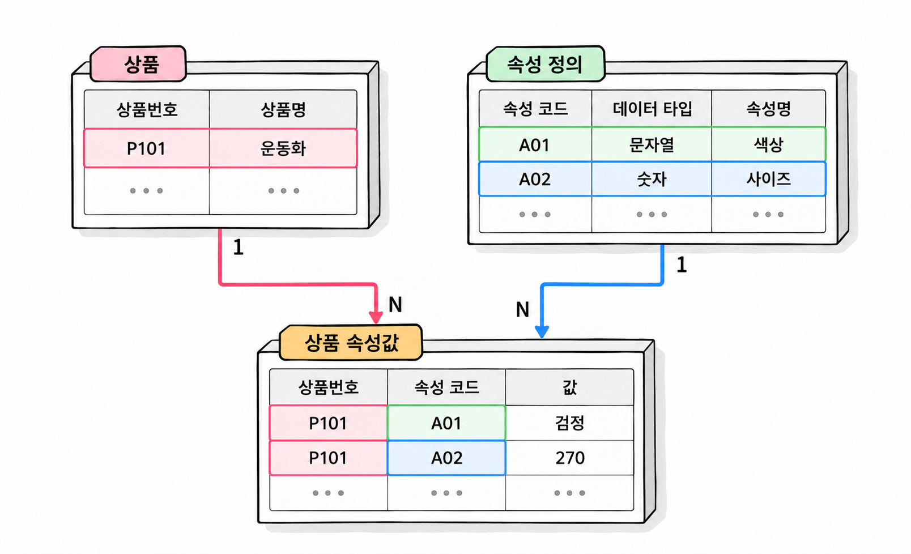

27장. 동적 속성과 EAV 설계란?
1. 속성이 자주 바뀌는 요구사항
1.1 고정 컬럼·유형별 확장 테이블·동적 속성
상품번호, 상품명, 판매가격은 대부분의 상품에 필요합니다. 반면 의류에는 소재가, 모니터에는 화면 크기가 필요합니다. 상품 종류가 늘어날수록 관리할 속성도 달라집니다.
속성이 달라지는 요구사항은 다음 방식으로 구현할 수 있습니다.
| 저장 방식 | 구조 | 적합한 상황 |
|---|---|---|
| 고정 컬럼 | 상품 테이블에 속성별 컬럼을 둡니다. | 속성의 의미가 안정적이고 검색·검증에 자주 사용됩니다. |
| 유형별 확장 테이블 | 공통 상품 정보와 유형별 상세 정보를 나눕니다. | 상품 유형이 명확하고 유형별 속성이 일정합니다. |
| 동적 속성 | 속성의 정의와 상품별 값을 행으로 저장합니다. | 운영 중 속성 종류가 자주 추가되고 상품마다 필요한 속성이 다릅니다. |
화면 크기와 해상도가 모든 모니터에 필요하다면 모니터 확장 테이블이 자연스럽습니다. 반면 판매자가 상품마다 서로 다른 부가 정보를 등록해야 한다면 동적 속성을 고려할 수 있습니다.
동적 속성(dynamic attribute)은 속성 정의를 데이터로 관리하는 방식입니다. 컬럼을 추가하지 않고도 새로운 속성을 등록할 수 있습니다. 이 장에서는 동적 속성을 행으로 저장하는 EAV 모델을 다룹니다.
동적 속성을 도입해도 상품번호나 판매가격까지 옮길 필요는 없습니다. 핵심 속성은 고정 컬럼으로 두고, 변경이 잦은 추가 속성만 동적으로 관리할 수 있습니다.
1.2 변경 빈도와 검색·검증 요구 분석
속성이 자주 추가된다는 이유만으로 저장 방식을 결정하지 않습니다. 추가된 속성을 어디에 사용하는지도 확인해야 합니다.
| 확인할 요구사항 | 설계에 미치는 영향 |
|---|---|
| 누가 속성을 추가하는가? | 개발자만 추가하는지, 운영자가 화면에서 등록하는지에 따라 관리 기능이 달라집니다. |
| 어떤 상품에 적용하는가? | 상품 유형과 속성의 연결 규칙이 필요합니다. |
| 범위 검색이나 정렬에 사용하는가? | 데이터 타입과 검색용 인덱스가 중요해집니다. |
| 입력값에 어떤 규칙이 있는가? | 필수값·단위·허용값을 정의해야 합니다. |
| 한 상품에 값이 몇 개까지 있는가? | 단일값과 다중값의 키 구조가 달라집니다. |
| 기존 속성의 의미도 바뀌는가? | 정의를 변경할 때 기존 데이터를 검증하고 변환해야 합니다. |
‘화면 크기가 27인치 이상인 상품’을 찾는다면 숫자 비교가 필요합니다. ‘상품 설명에 부가 정보를 표시한다’면 검색 요구는 상대적으로 적습니다. 같은 추가 속성이라도 용도에 따라 저장 구조와 운영 비용이 달라집니다.
화면에서 입력 칸을 자유롭게 늘리는 기능과 데이터베이스에서 모든 속성을 자유롭게 검색하는 기능도 구별해야 합니다. 입력 기능은 간단해져도 여러 속성의 조건을 결합하는 조회는 복잡해질 수 있습니다.
2. EAV 모델
2.1 엔터티·속성·값의 구조
EAV(Entity–Attribute–Value)는 대상, 속성, 값을 조합하여 데이터를 저장하는 모델입니다. 상품에 적용하면 엔터티는 상품입니다. 속성은 무게나 색상이며, 값은 상품별 실제 무게나 색상입니다.
고정 컬럼 구조에서는 한 상품의 무게와 색상을 같은 행에 저장합니다.
| 상품번호 | 상품명 | 무게(g) | 색상 |
|---|---|---|---|
| 101 | 휴대용 스피커 | 420 | BLACK |
| 102 | 탁상용 스피커 | 850 | WHITE |
EAV에서는 속성별 값을 각각의 행으로 저장합니다.
| 상품번호 | 속성 코드 | 값 |
|---|---|---|
| 101 | WEIGHT_G | 420 |
| 101 | COLOR | BLACK |
| 102 | WEIGHT_G | 850 |
| 102 | COLOR | WHITE |
이 표의 ‘값’은 개념을 설명하기 위한 표현입니다. 실제 구현에서 숫자와 문자를 하나의 문자열 컬럼에 모두 넣을지는 별도로 판단해야 합니다.
일반적인 EAV 구조에는 상품 테이블, 속성 정의 테이블, 상품별 속성값 테이블이 있습니다. 속성 정의에는 속성명과 데이터 타입 등을 저장합니다. 상품별 속성값은 상품과 속성 정의를 외래키로 참조합니다.

단일값 속성이라면 상품번호와 속성 코드의 조합으로 한 행을 구별할 수 있습니다. 이 조합을 기본키로 사용하면 같은 상품의 무게를 두 행에 등록하지 못합니다.
새 속성을 추가할 때는 속성 정의와 해당 상품의 속성값을 등록합니다. 다만 입력 화면, 검증, 검색 기능까지 자동으로 완성되지는 않습니다. 각 기능이 속성 정의를 읽고 동작하도록 구현해야 합니다.
2.2 속성 메타데이터와 데이터 타입별 값
메타데이터(metadata)는 데이터의 의미와 구조를 설명하는 데이터입니다. EAV의 속성 정의에는 다음과 같은 메타데이터를 둘 수 있습니다.
| 항목 | 의미 | 예 |
|---|---|---|
| 속성 코드 | 속성을 구별하는 식별자 | WEIGHT_G |
| 속성명 | 화면에 표시할 이름 | 무게 |
| 데이터 타입 | 값의 종류 | NUMBER |
| 단위 코드 | 값을 해석하는 기준 단위 | g |
| 필수 여부 | 적용 대상에 반드시 필요한지 여부 | Y |
| 최소·최대 개수 | 등록 가능한 값의 개수 | 1, 1 |
모든 값을 VARCHAR2로 저장하면 컬럼 구조는 간단해집니다. 그러나 숫자 범위로 검색할 때 형 변환이 필요합니다. 숫자가 아닌 문자열이 섞이면 변환 오류도 발생할 수 있습니다.
타입을 구별하는 구현 방식에는 타입별 값 컬럼과 타입별 값 테이블이 있습니다.
| 방식 | 예 | 고려할 점 |
|---|---|---|
| 타입별 값 컬럼 | number_value, text_value, date_value | 한 행에서 알맞은 값 컬럼 하나만 사용하도록 검증해야 합니다. |
| 타입별 값 테이블 | 숫자 속성값 테이블, 문자 속성값 테이블 | 테이블이 늘고 여러 타입을 함께 조회할 때 연결이 필요합니다. |
다음 예제는 숫자와 문자 속성을 한 테이블에서 관리합니다. 속성값에도 타입 코드를 저장합니다. 복합 외래키로 이 코드가 속성 정의의 타입과 일치하도록 제한합니다.
예제 27-1 — 타입을 구별하는 상품 속성 저장하기
파일명: ch27_eav_setup.sql
CREATE TABLE ch27_product (
product_id NUMBER(10) PRIMARY KEY,
product_name VARCHAR2(100 CHAR) NOT NULL
);
CREATE TABLE ch27_attribute (
attribute_code VARCHAR2(30 CHAR) PRIMARY KEY,
attribute_name VARCHAR2(100 CHAR) NOT NULL,
data_type VARCHAR2(10 CHAR) NOT NULL,
unit_code VARCHAR2(20 CHAR),
CONSTRAINT ch27_attr_type_ck
CHECK (data_type IN ('NUMBER', 'TEXT')),
CONSTRAINT ch27_attr_code_type_uq
UNIQUE (attribute_code, data_type)
);
CREATE TABLE ch27_product_value (
product_id NUMBER(10) NOT NULL,
attribute_code VARCHAR2(30 CHAR) NOT NULL,
data_type VARCHAR2(10 CHAR) NOT NULL,
number_value NUMBER,
text_value VARCHAR2(200 CHAR),
CONSTRAINT ch27_value_pk
PRIMARY KEY (product_id, attribute_code),
CONSTRAINT ch27_value_product_fk
FOREIGN KEY (product_id)
REFERENCES ch27_product (product_id),
CONSTRAINT ch27_value_attr_fk
FOREIGN KEY (attribute_code, data_type)
REFERENCES ch27_attribute (attribute_code, data_type),
CONSTRAINT ch27_value_type_ck CHECK (
(data_type = 'NUMBER'
AND number_value IS NOT NULL
AND text_value IS NULL)
OR
(data_type = 'TEXT'
AND number_value IS NULL
AND text_value IS NOT NULL)
)
);
INSERT INTO ch27_product VALUES (101, '휴대용 스피커');
INSERT INTO ch27_product VALUES (102, '탁상용 스피커');
INSERT INTO ch27_product VALUES (103, '소형 스피커');
INSERT INTO ch27_attribute
VALUES ('WEIGHT_G', '무게', 'NUMBER', 'g');
INSERT INTO ch27_attribute
VALUES ('COLOR', '색상', 'TEXT', NULL);
INSERT INTO ch27_product_value
VALUES (101, 'WEIGHT_G', 'NUMBER', 420, NULL);
INSERT INTO ch27_product_value
VALUES (101, 'COLOR', 'TEXT', NULL, 'BLACK');
INSERT INTO ch27_product_value
VALUES (102, 'WEIGHT_G', 'NUMBER', 850, NULL);
INSERT INTO ch27_product_value
VALUES (102, 'COLOR', 'TEXT', NULL, 'WHITE');
INSERT INTO ch27_product_value
VALUES (103, 'WEIGHT_G', 'NUMBER', 300, NULL);
INSERT INTO ch27_product_value
VALUES (103, 'COLOR', 'TEXT', NULL, 'BLACK');
COMMIT;
SELECT product_id, attribute_code,
data_type, number_value, text_value
FROM ch27_product_value
ORDER BY product_id, attribute_code;실행 결과
조회 결과는 다음과 같습니다. 값 컬럼의 NULL은 SQL Developer에서 빈칸이나 설정된 NULL 표시로 나타납니다.
| PRODUCT_ID | ATTRIBUTE_CODE | DATA_TYPE | NUMBER_VALUE | TEXT_VALUE |
|---|---|---|---|---|
| 101 | COLOR | TEXT | NULL | BLACK |
| 101 | WEIGHT_G | NUMBER | 420 | NULL |
| 102 | COLOR | TEXT | NULL | WHITE |
| 102 | WEIGHT_G | NUMBER | 850 | NULL |
| 103 | COLOR | TEXT | NULL | BLACK |
| 103 | WEIGHT_G | NUMBER | 300 | NULL |
복합 외래키는 WEIGHT_G를 TEXT 타입으로 등록하는 일을 막습니다. CHECK는 지정한 타입의 값 컬럼만 채우도록 제한합니다. 두 제약조건이 함께 작동해야 정의된 타입과 실제 저장 위치가 일치합니다.
이 예제는 상품별로 각 속성을 한 개만 저장합니다. 날짜나 시간 속성이 필요하다면 해당 타입 코드와 값 컬럼, 검증 조건을 함께 확장해야 합니다.
2.3 필수값·단위·다중값·허용값 검증
속성값의 데이터 타입이 맞아도 업무 규칙까지 모두 만족하는 것은 아닙니다. 무게에 음수를 입력하거나 필수 속성 자체를 등록하지 않을 수도 있습니다.
필수 속성은 ‘속성값 행이 반드시 존재한다’는 규칙입니다. 값 컬럼의 NOT NULL만으로는 검사할 수 없습니다. 행이 없으면 해당 컬럼의 제약조건을 검사할 기회도 없기 때문입니다.
상품 유형별로 필요한 속성이 다르다면 유형과 속성을 연결하는 테이블을 둡니다. 이 테이블에 필수 여부와 허용 개수를 기록합니다. 상품 상태를 ‘판매 가능’으로 바꾸는 시점에 필수 속성이 모두 있는지 검증하는 방식도 사용할 수 있습니다.
단위는 저장 기준을 통일하는 편이 비교하기 좋습니다. 예제에서는 무게를 g으로 저장합니다. 입력 화면에서 kg을 받더라도 저장 전에 g으로 변환합니다. 같은 속성에 0.42와 420을 단위 정보 없이 섞어 저장하면 올바르게 비교할 수 없습니다.
다중값 속성은 값마다 행을 나눕니다. 지원 연결 방식이 USB, BLUETOOTH 두 개라면 각각 한 행으로 저장합니다. 쉼표로 연결한 문자열은 개별 값을 검색하거나 삭제하기 어렵습니다.
다중값을 지원할 때는 기본키도 달라져야 합니다. 상품번호·속성 코드에 값 식별자나 순번을 더할 수 있습니다. 순번으로 행을 구별하더라도 같은 값의 중복을 허용할지는 별도로 정해야 합니다.
| 규칙 | 구현 방법 |
|---|---|
| 상품과 속성 정의가 존재해야 합니다. | 외래키로 검증합니다. |
| 단일값 속성은 하나만 저장합니다. | 상품번호·속성 코드의 유일성을 보장합니다. |
| 문자·숫자 중 알맞은 값만 저장합니다. | 타입 코드와 값 컬럼의 조합을 검사합니다. |
| 색상은 등록된 코드만 허용합니다. | 허용값 테이블과 연결하여 검증합니다. |
| 필수 속성이 모두 있어야 합니다. | 대상 상품의 속성 집합을 검사합니다. |
| 상품 유형에 맞는 속성만 사용합니다. | 유형·속성 연결 규칙과 상품 유형을 함께 검사합니다. |
허용값 테이블은 보통 속성 코드와 허용값 코드를 함께 키로 사용합니다. 다른 속성의 허용값을 잘못 사용하는 일을 막기 위해서입니다.
메타데이터에 최소값이나 필수 여부를 기록하는 것만으로 검증이 실행되지는 않습니다. 예를 들어 CHECK에서는 다른 테이블의 최소값을 서브쿼리로 읽을 수 없습니다. 동적 규칙은 입력 처리용 프로시저나 애플리케이션 등에서 명시적으로 검사해야 합니다.
검증과 저장 사이에 속성 정의가 바뀌는 상황도 고려해야 합니다. 검증과 저장에 같은 규칙을 적용하도록 트랜잭션과 정의 변경 절차를 정합니다.
3. EAV의 조회와 유지 비용
3.1 여러 속성 조건의 조인과 인덱스
고정 컬럼에서는 무게 조건과 색상 조건을 같은 행에 적용합니다. EAV에서는 두 값이 서로 다른 행에 있으므로 상품번호를 기준으로 조건을 결합해야 합니다.
다음 코드는 예제 27-1의 데이터에서 무게가 500g 이하이고 색상이 검정인 상품을 찾습니다.
코드 조각
SELECT p.product_id, p.product_name
FROM ch27_product p
JOIN ch27_product_value w
ON w.product_id = p.product_id
AND w.attribute_code = 'WEIGHT_G'
JOIN ch27_product_value c
ON c.product_id = p.product_id
AND c.attribute_code = 'COLOR'
WHERE w.number_value <= 500
AND c.text_value = 'BLACK'
ORDER BY p.product_id;w는 무게 행을, c는 색상 행을 나타냅니다. 기본키가 단일값을 보장하므로 속성값 중복으로 조인 결과가 늘어나는 일을 막을 수 있습니다.
다중값 속성에서는 한 상품이 여러 행과 일치할 수 있습니다. 상품의 존재 여부만 필요하다면 EXISTS로 조건을 표현하는 방법을 고려합니다. 결과에 DISTINCT를 붙이기 전에 중복이 생기는 원인부터 확인해야 합니다.
예제의 기본키 인덱스는 상품번호로 특정 상품의 속성을 읽는 데 유리합니다. 반면 속성값으로 상품을 찾는 조회에는 컬럼 순서가 다른 인덱스가 필요할 수 있습니다.
코드 조각
CREATE INDEX ch27_value_num_ix
ON ch27_product_value
(attribute_code, number_value, product_id);
CREATE INDEX ch27_value_text_ix
ON ch27_product_value
(attribute_code, text_value, product_id);숫자 인덱스는 속성 코드를 먼저 제한한 뒤 숫자 범위를 탐색합니다. 문자 인덱스는 속성 코드와 문자값으로 상품을 찾는 데 사용할 수 있습니다.
인덱스를 추가했다고 모든 속성 조합의 검색이 빨라지는 것은 아닙니다. 조건별 일치 건수와 조인 중간 결과를 실행 통계로 확인해야 합니다. 등록·수정 때 인덱스를 유지하는 비용도 늘어납니다.
EAV에서는 상품 한 건의 속성이 많을수록 속성값 행도 늘어납니다. 상품 10만 개가 각각 속성 20개를 가진다면 속성값은 200만 행입니다. 상품 수와 속성값 행 수를 구별해서 규모를 예상해야 합니다.
3.2 PIVOT·조건부 집계로 행을 열로 전환
상품 목록 화면에서는 무게와 색상을 나란히 표시하는 편이 읽기 좋습니다. EAV의 속성값 행을 화면용 컬럼으로 바꾸는 방법에는 조건부 집계와 PIVOT이 있습니다.
다음은 조건부 집계로 숫자값과 문자값을 각각 꺼내는 코드입니다.
코드 조각
SELECT p.product_id,
p.product_name,
MAX(
CASE WHEN v.attribute_code = 'WEIGHT_G'
THEN v.number_value
END
) AS weight_g,
MAX(
CASE WHEN v.attribute_code = 'COLOR'
THEN v.text_value
END
) AS color
FROM ch27_product p
LEFT JOIN ch27_product_value v
ON v.product_id = p.product_id
AND v.attribute_code IN ('WEIGHT_G', 'COLOR')
GROUP BY p.product_id, p.product_name
ORDER BY p.product_id;CASE는 해당 속성의 값만 남기고 나머지는 NULL로 만듭니다. MAX는 상품별 그룹에서 남은 값을 반환합니다. 단일값 제약이 있으므로 각 속성에서 선택할 값은 최대 하나입니다.
LEFT JOIN을 사용했으므로 속성값이 없는 상품도 결과에 남습니다. 이 경우 해당 속성의 출력 컬럼은 NULL입니다.
다중값 속성에 같은 코드를 적용하면 MAX가 값 하나만 남깁니다. 여러 값을 표시해야 한다면 별도 상세 목록이나 문자열 집계 등 출력 목적에 맞는 방법을 선택해야 합니다.
PIVOT은 지정한 행의 값을 컬럼으로 펼치면서 집계합니다. 다음 예제는 타입이 같은 숫자 속성 두 개를 사용합니다. 이전 예제의 테이블과 관계없이 실행할 수 있습니다.
예제 27-2 — 숫자 속성을 PIVOT으로 펼치기
파일명: ch27_pivot.sql
WITH sample_value AS (
SELECT 101 AS product_id,
'WEIGHT_G' AS attribute_code,
420 AS number_value
FROM dual
UNION ALL
SELECT 101, 'BATTERY_HOUR', 12 FROM dual
UNION ALL
SELECT 102, 'WEIGHT_G', 850 FROM dual
UNION ALL
SELECT 102, 'BATTERY_HOUR', 20 FROM dual
)
SELECT product_id, weight_g, battery_hour
FROM (
SELECT product_id, attribute_code, number_value
FROM sample_value
)
PIVOT (
MAX(number_value)
FOR attribute_code IN (
'WEIGHT_G' AS weight_g,
'BATTERY_HOUR' AS battery_hour
)
)
ORDER BY product_id;실행 결과
PRODUCT_ID WEIGHT_G BATTERY_HOUR
---------- -------- ------------
101 420 12
102 850 20PIVOT은 집계 대상과 전환 기준에 사용하지 않은 입력 컬럼을 기준으로 암묵적으로 그룹을 만듭니다. 입력에 불필요한 식별자나 시각이 포함되면 예상보다 행이 많이 나올 수 있습니다. 따라서 내부 조회에서는 전환에 필요한 컬럼만 선택합니다.
일반적인 PIVOT의 출력 컬럼은 IN에 지정한 목록으로 정해집니다. 속성 정의 테이블에 새 속성을 등록해도 출력 컬럼이 자동으로 추가되지는 않습니다.
운영자가 선택한 속성을 동적으로 컬럼으로 표시하려면 별도 구현이 필요합니다. 동적 SQL을 사용한다면 컬럼 목록은 검증된 속성 정의에서 만들고, 검색값은 바인드 변수로 전달합니다.
3.3 타입 안전성·통계·무결성의 한계
타입 안전성(type safety)은 값이 정해진 데이터 타입에 맞게 저장되고 사용되도록 보장하는 성질입니다. 숫자값을 NUMBER에 저장하면 문자와 섞이는 문제는 줄일 수 있습니다. 그러나 같은 숫자 컬럼 안에 무게, 길이, 배터리 사용 시간이 함께 들어갈 수 있습니다.
숫자라는 사실만으로 단위와 의미까지 맞아지는 것은 아닙니다. 속성 코드와 메타데이터를 함께 해석해야 합니다.
옵티마이저 통계에서도 주의가 필요합니다. number_value 전체의 분포에는 서로 다른 속성의 숫자가 섞여 있습니다. 무게의 값 분포와 배터리 사용 시간의 분포는 다를 수 있습니다.
속성 코드와 값의 관계를 통계에 충분히 반영하지 못하면 예상 행 수가 실제와 달라질 수 있습니다. 필요한 경우 히스토그램이나 확장 통계를 검토합니다. 대표 속성과 검색값으로 추정 정확성도 확인해야 합니다. 통계를 추가하는 것만으로 모든 속성 조합의 추정이 정확해지지는 않습니다.
무결성도 속성값 한 행만 검사해서는 충분하지 않습니다. 필수 속성 누락, 속성 간 비교, 유형별 허용 개수는 여러 행이나 테이블을 함께 확인해야 합니다.
| 검토 대상 | EAV에서 발생하는 비용 |
|---|---|
| 여러 속성의 동시 검색 | 속성별 행을 조인하거나 존재 여부를 반복 검사합니다. |
| 속성별 정렬 | 해당 속성값을 연결한 뒤 정렬 기준으로 사용합니다. |
| 필수 속성 검증 | 존재하지 않는 속성값 행을 찾아야 합니다. |
| 타입·단위 변경 | 해당 속성의 기존 값을 검증하고 변환해야 합니다. |
| 보고서 작성 | 행으로 저장된 속성을 필요한 컬럼으로 펼칩니다. |
| 개발 도구의 타입 검사 | 속성 정의가 실행 중 데이터로 결정되어 사전 검사가 제한됩니다. |
속성 타입을 숫자에서 문자로 바꾸는 일은 메타데이터 한 행의 수정으로 끝나지 않습니다. 값 컬럼, 검색 조건, 인덱스, 출력 형식도 영향을 받습니다. 기존 속성의 의미를 바꾸기보다 새 속성으로 등록하고 전환하는 편이 안전한 경우도 있습니다.
자주 검색하고 정렬하며 강한 검증이 필요한 속성은 고정 컬럼이나 유형별 확장 테이블로 관리하는 편이 유리할 수 있습니다. EAV는 변경이 잦은 속성을 관리하는 선택지입니다. 유연성을 얻는 대신 조회와 검증의 책임이 늘어납니다.
4. 연습문제 — 상품별 추가 속성의 저장 방식 선택
요구사항
온라인 판매 서비스가 다음 상품 정보를 관리합니다.
- 모든 상품에는 상품번호, 상품명, 판매가격이 있습니다.
- 모니터에는 화면 크기와 해상도가 반드시 필요합니다.
- 의류에는 소재와 세탁 방법이 필요합니다.
- 판매자는 상품별 부가 속성을 추가할 수 있습니다.
- 화면 크기는 숫자 범위 검색과 정렬에 사용합니다.
- 지원 연결 방식은 한 상품에 여러 개를 등록할 수 있습니다.
- 무게는 g과 kg으로 입력받지만 같은 기준으로 비교해야 합니다.
- 운영자는 색상 속성의 허용값을 관리합니다.
작성할 내용
- 각 속성을 고정 컬럼, 유형별 확장 테이블, 동적 속성 중 어디에 저장할지 결정합니다.
- 선택한 구조를 draw.io ERD로 작성합니다.
- EAV에 저장할 속성의 타입·단위·허용 개수를 데이터 사전으로 정의합니다.
- 필수 속성과 허용값을 검증하는 위치와 시점을 정합니다.
- ‘화면 크기 27 이상이며 특정 연결 방식을 지원하는 상품’의 조회 SQL을 작성합니다.
- 상품별 속성 조회와 속성값 기반 상품 검색에 필요한 인덱스를 제안합니다.
완료 조건
- 상품과 속성값에서 각각 한 행이 뜻하는 바가 명확합니다.
- 단일값과 다중값의 키 구조가 구분됩니다.
- 지원 연결 방식을 쉼표로 묶어 저장하지 않습니다.
- 무게의 저장 단위와 입력값 변환 규칙이 정해져 있습니다.
- 필수 속성값 행의 누락을 검증할 수 있습니다.
- 메타데이터 등록과 실제 검증 동작을 구별하여 설명합니다.
- 저장 방식의 선택 근거에 변경 빈도, 검색, 무결성, 유지 비용이 포함됩니다.